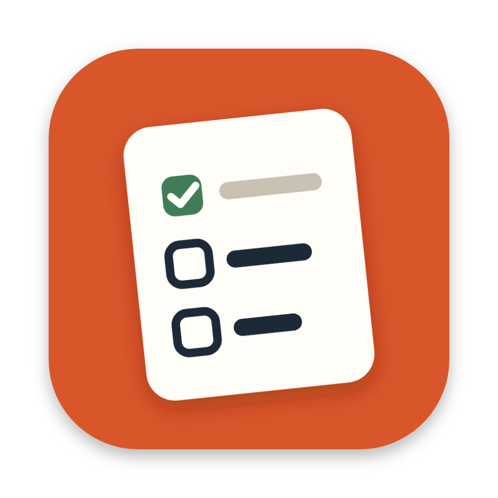

오늘 할 일과 이번 주 할 일을 한 곳에서 · 바탕화면 위젯 · 맥 캘린더와 아이폰 '미리 알림' 연동
위 칸에 적고 Enter. 날짜 · 시간 · 마감 · 반복을 알아들어요.
내일 오후 3시 치과 금요일까지 보고서매주 월 9시 회의 분류는 사역, 큐시트 제작
"!" 는 중요 표시. "분류는 ○○," 나 "#○○" 로 분류를 정해요 (없는 분류는 새로 만들어요).